Tất cả những điều cần biết về Chatbot WhatsApp
Bạn đã từng cân nhắc sử dụng API WhatsApp Business cho công ty của mình nhưng không chắc nó là gì hoặc nó hoạt động như thế nào?
Hướng dẫn toàn diện về API WhatsApp Business này cung cấp tất cả thông tin bạn cần. Chúng ta sẽ tìm hiểu WhatsApp API là gì, cũng như các phương pháp được đề xuất để thiết lập tài khoản WhatsApp API, quản lý danh bạ và gửi tin nhắn qua WhatsApp API.
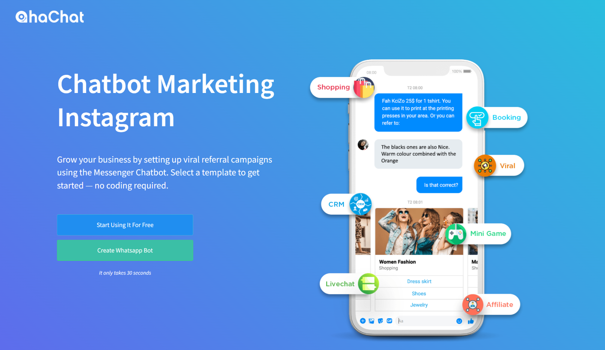
Nguyên tắc cơ bản của WhatsApp API
Đối với các doanh nghiệp vừa và lớn muốn sử dụng WhatsApp với nhiều người dùng, chúng ta có WhatsApp API. So với WhatsApp Business App thì nó khó để tạo hơn. Chẳng hạn, WhatsApp API phải được tích hợp vào một chương trình thương mại vì nó thiếu ứng dụng hoặc giao diện người dùng.
WhatsApp Cloud API, có thể được mua trực tiếp từ Meta và WhatsApp On-premises API, còn được gọi là WhatsApp Business API hoặc WhatsApp API, có thể được mua thông qua các dịch vụ của bên thứ ba được gọi là Nhà cung cấp giải pháp kinh doanh, là hai lựa chọn API doanh nghiệp có thể sử dụng.
Nhà cung cấp giải pháp kinh doanh sử dụng WhatsApp for Business
Các doanh nghiệp phải gửi đơn đăng ký thông qua Nhà cung cấp giải pháp kinh doanh để có quyền truy cập vào WhatsApp Business API (BSP). Tùy thuộc vào BSP của bạn, trải nghiệm của bạn với WhatsApp API có thể rất khác nhau. Có hai loại WhatsApp BSP: nhà cung cấp SMS và những nhà cung cấp khác, để làm cho mọi việc trở nên đơn giản hơn.
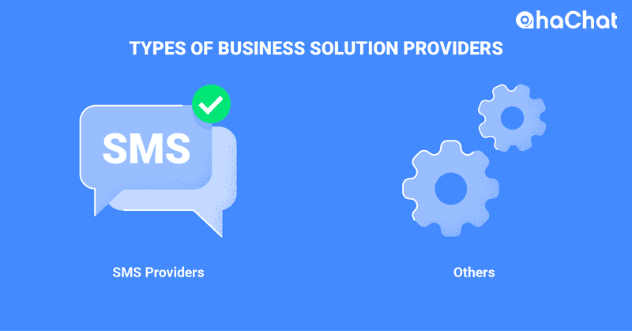
Các nhà cung cấp dịch vụ SMS như Twilio và Vonage kết nối WhatsApp API với API độc quyền của riêng họ. WhatsApp API dành cho doanh nghiệp. Nhà cung cấp giải pháp kinh doanh. Do đó, việc thêm hoặc cập nhật bất kỳ tính năng mới nào của WhatsApp cần thêm thời gian và công sức từ phía họ.
BSP không tự nhận mình là nhà cung cấp SMS có thể sử dụng proxy APIs giống với thiết lập kỹ thuật của WhatsApp. Do đó, họ có thể nhanh chóng và dễ dàng kích hoạt các tính năng mới của API WhatsApp Business.
Bây giờ, hãy kiểm tra các tuỳ chọn khác nhau để lưu trữ tài khoản WhatsApp API.
Các tùy chọn để lưu trữ API WhatsApp
Các máy chủ riêng của BSP là nơi duy nhất trước đây có thể lưu trữ WhatsApp API. Bắt đầu từ tháng 5 năm 2022, các doanh nghiệp sẽ có thể sử dụng WhatsApp Cloud API và lưu trữ API của họ trực tiếp thông qua Meta.
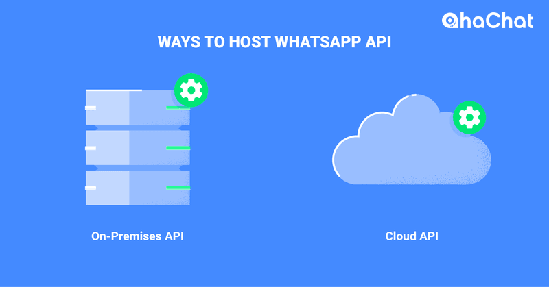
Các phương pháp lưu trữ WhatsApp for Business API
Các doanh nghiệp sử dụng Cloud API sẽ có quyền truy cập vào các tính năng và thay đổi API mới nhất. Mặt khác, người dùng API tại chỗ sẽ không thể sử dụng các tính năng WhatsApp API mới cho đến khi BSP của họ cập nhật phần mềm API theo cách thủ công.
Mặc dù Meta khuyên các công ty nên mua WhatsApp API trực tiếp từ họ, nhưng một số công ty lại muốn hợp tác với BSP cho các dịch vụ như hỗ trợ thiết lập WhatsApp API, ứng dụng đánh dấu tick xanh, hỗ trợ cá nhân hóa cho các vấn đề liên quan đến WhatsApp API, v.v.
Bây giờ, hãy xem xét chi phí của WhatsApp Business API.
Định giá cho WhatsApp API
Tóm lại, để có tài khoản WhatsApp Business API, bạn phải đăng ký với BSP. BSP đóng vai trò trung gian, trả tiền cho WhatsApp để kết nối với API của họ để họ có thể cung cấp dịch vụ cho khách hàng. Các doanh nghiệp phải trả các khoản phí này bởi BSP, những người có thể đánh dấu chúng để tăng lợi nhuận của họ.
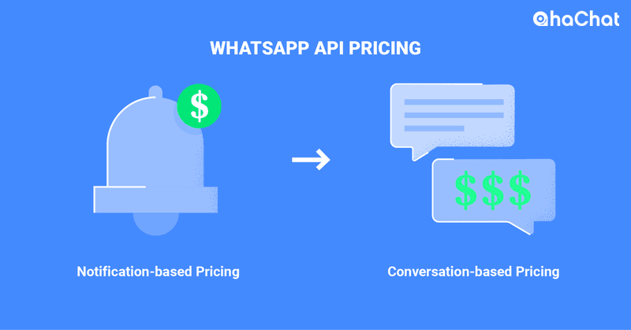
Định giá cho WhatsApp API
Theo nhiều BSP, mô hình định giá dựa trên thông báo tính phí cho các doanh nghiệp trên cơ sở mỗi tin nhắn. Tuy nhiên, WhatsApp sẽ chuyển đổi sang mô hình định giá dựa trên cuộc trò chuyện, trong đó các doanh nghiệp được trả tiền cho mỗi cuộc trò chuyện, có hiệu lực từ ngày 1 tháng 2 năm 2022. Bây giờ, hãy kiểm tra kỹ hơn từng yếu tố tạo nên tài khoản WhatsApp API.
Các thành phần của WhatsApp Business API
Hồ sơ doanh nghiệp WhatsApp và số điện thoại chỉ là hai trong số các thành phần của API WhatsApp được mô tả trong phần này.
Hồ sơ doanh nghiệp trên WhatsApp for Business
Khách hàng có Hồ sơ doanh nghiệp API WhatsApp sẽ có thêm thông tin chi tiết về công ty của bạn. Bằng cách nâng cấp trang web, địa chỉ, email, ảnh bìa và mô tả, các doanh nghiệp có thể tối đa hóa hồ sơ doanh nghiệp của mình.
Hồ sơ doanh nghiệp API WhatsApp
Không giống như các dịch vụ nhắn tin khác, không thể tìm kiếm hồ sơ WhatsApp API Business trong ứng dụng. Hãy tìm hiểu về về hoạt động của số điện thoại WhatsApp API trong phần tiếp theo.
Doanh nghiệp WhatsApp API: Số điện thoại di động
Bạn phải liên kết số điện thoại với tài khoản WhatsApp API của mình.
Bạn có thể mua một số điện thoại mới hoặc chuyển một số điện thoại hiện có, tùy thuộc vào BSP của bạn. Hãy nhớ rằng số điện thoại được liên kết với API WhatsApp phải có khả năng nhận cuộc gọi hoặc SMS.
Chúng tôi khuyên bạn nên sử dụng số điện thoại chưa được liên kết với tài khoản Ứng dụng khác.
Có thể di chuyển số điện thoại từ Ứng dụng sang API, tuy nhiên không nên làm như vậy vì bạn có nguy cơ mất thông tin tài khoản được kết nối với số điện thoại.
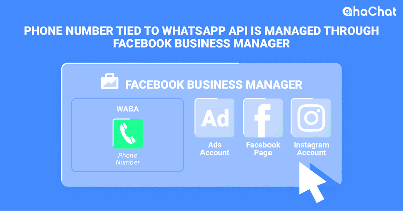
API WhatsApp: Số điện thoại
WABA, được kiểm soát bởi Trình quản lý doanh nghiệp của Facebook, chứa một số điện thoại. Bạn có thể quản lý các tài sản bổ sung của Facebook trong Trình quản lý doanh nghiệp của Facebook. Tùy thuộc vào cấp số điện thoại, mỗi Trình quản lý kinh doanh của Facebook có thể có tối đa 20 số WABA.
Giới hạn tầng suất nhắn tin và số điện thoại
Giới hạn nhắn tin của tài khoản API WhatsApp hoặc số lượng Liên hệ tối đa bạn có thể nhắn tin dựa trên cấp số điện thoại. WABA có năm lớp mà một số điện thoại có thể truy cập, bao gồm:
- Bậc dùng thử chưa xác minh: Có thể tạo đối đa hai số và gửi tin nhắn từ 50-250 Địa chỉ liên hệ khác nhau trong khoảng thời gian 24 giờ.
- Cấp 1: Trong khoảng thời gian 24 giờ, Có thể gửi tin nhắn tới 1.000 địa chỉ liên hệ khác nhau và có tối đa 20 số điện thoại.
- Bậc 2: Giao tiếp với 10.000 Địa chỉ liên hệ riêng biệt trong khoảng thời gian 24 giờ.
- Bậc 3: Gửi tin nhắn tới 100.000 địa chỉ liên hệ khác nhau trong khoảng thời gian 24 giờ
- Bậc 4: Có thể gửi tin nhắn không giới hạn trong khoảng thời gian 24 giờ.
Các hạn chế liên lạc chỉ áp dụng cho các tin nhắn do doanh nghiệp khởi xướng được gọi là Mẫu tin nhắn, chúng tôi sẽ đi vào chi tiết hơn về sau. Các doanh nghiệp đăng ký số điện thoại của họ sẽ bắt đầu ở Bậc dùng thử chưa được xác minh hoặc Bậc 1 tùy thuộc vào BSP.
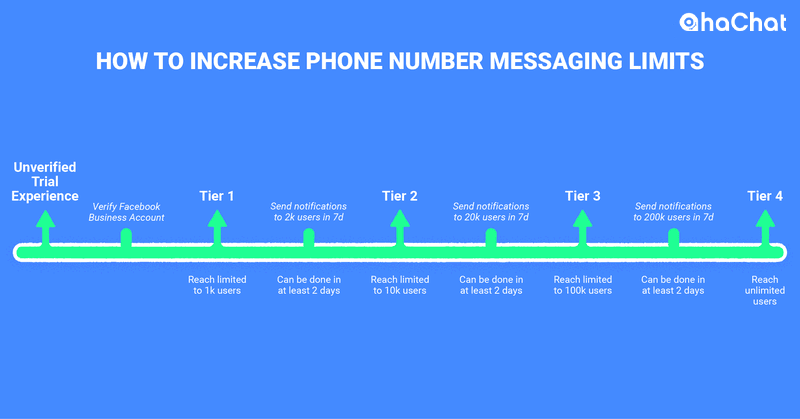
Bậc số điện thoại và giới hạn nhắn tin cho WhatsApp
Bạn phải xác thực Tài khoản doanh nghiệp trên Facebook của mình để chuyển từ Bậc dùng thử chưa được xác minh sang bậc tiếp theo. Các doanh nghiệp ở Bậc 1, 2 và 3 sẽ được chuyển lên bậc tiếp theo khi họ đạt đến giới hạn nhắn tin của bậc hiện tại.
Meta sẽ thay đổi cách tự động tăng hoặc giảm giới hạn nhắn tin kể từ tháng 9 năm 2022. Ban đầu, các quy tắc này ảnh hưởng đến các công ty ở Brazil, Colombia và Mexico, về sau các quy tắc này sẽ áp dụng cho tất cả các công ty.
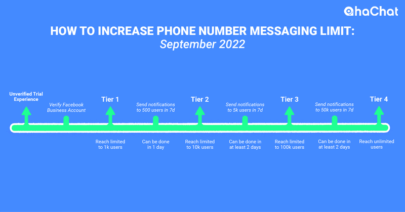
Cách tăng giới hạn tin nhắn WhatsApp cho số điện thoại bắt đầu từ tháng 9 năm 2022 bằng API
Trước đây, các công ty phải gửi gấp đôi số lượng cho phép theo cấp độ tin nhắn của họ trong một tuần để chuyển sang cấp độ tiếp theo. Từ tháng 9 trở đi, họ chỉ cần gửi một nửa số tiền phân bổ cho cấp nhắn tin của mình trong bảy ngày để chuyển lên cấp tiếp theo.
Ngoài ra, các công ty có xếp hạng chất lượng cao và trạng thái Không được gắn cờ sẽ tự động nâng cấp lên bậc tiếp theo sau 24 giờ sau khi đạt đến giới hạn nhắn tin.
Xếp hạng chất lượng số điện thoại bằng WhatsApp API
Sự hài lòng của khách hàng đối với chất lượng cuộc trò chuyện của doanh nghiệp bạn được biểu thị bằng xếp hạng và trạng thái chất lượng của số điện thoại. Những thông tin chi tiết quan trọng này có sẵn trong Trình quản lý kinh doanh của Facebook.
Một số biến kết hợp để tạo thành xếp hạng chất lượng. Các khối của khách hàng, tần suất của các tin nhắn gửi đi như thông báo hoặc tin nhắn quảng cáo và thời gian phản ứng đều được bao gồm trong phần này. Có ba mức chất lượng:
- Cao (xanh)
- Trung bình (vàng)
- Thấp (đỏ)
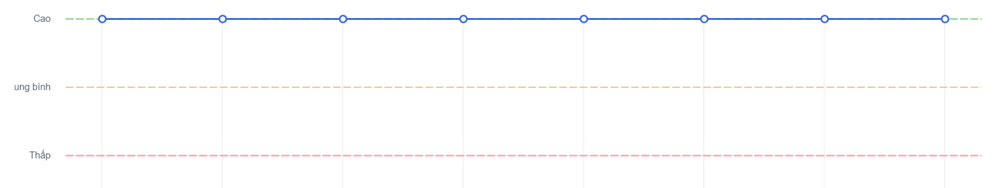
Xếp hạng chất lượng số điện thoại bằng WhatsApp API
Chỉ gửi những tin nhắn nổi bật phù hợp với Danh bạ của bạn có thể giúp bạn duy trì xếp hạng chất lượng cao và ngăn chặn việc đưa số điện thoại của bạn vào danh sách đen. Xếp hạng chất lượng của số điện thoại của bạn sẽ giảm từ Cao xuống Trung bình hoặc Thấp nếu bị chặn.
Trạng thái số điện thoại của bạn có thể thay đổi nếu xếp hạng chất lượng thay đổi. Có tổng cộng năm trạng thái:
- Pending: Trước khi quá trình xem xét Chính sách thương mại kết thúc, tình huống
- Offline: Khi các công ty không vượt qua bài kiểm tra Chính sách thương mại hoặc ngừng sử dụng API WhatsApp,
- The following status occurs: Điều kiện ban đầu
- Flagged: Khi xếp hạng chất lượng đạt Thấp. Trong 7 ngày, nếu nó trở thành Trung bình hoặc Cao, trạng thái sẽ chuyển trở lại thành Đã kết nối. Nếu không, WhatsApp sẽ thay đổi trạng thái của bạn trở lại thành Đã kết nối đồng thời giới hạn số lượng tin nhắn bạn có thể gửi.
- Restricted: Đây là trạng thái khi các công ty đã sử dụng hết phân bổ thông tin liên lạc của họ và có xếp hạng chất lượng thấp.
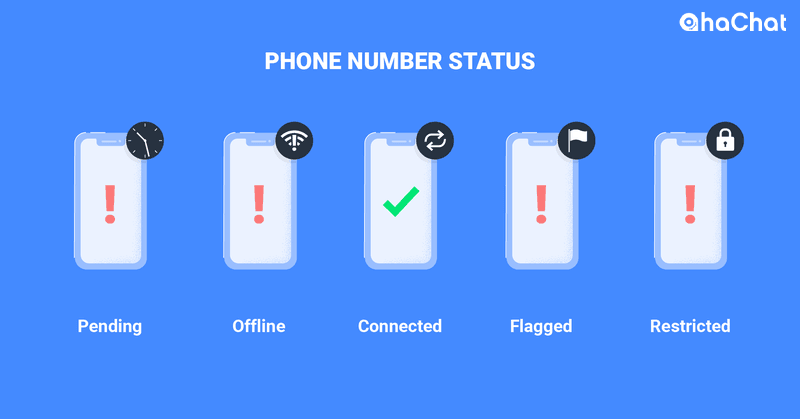
Trạng thái API WhatsApp cho số điện thoại
Bạn có thể đăng ký để được thông báo khi trạng thái số điện thoại của bạn thay đổi từ Đã kết nối thành Đã gắn cờ và ngược lại, cũng như khi cấp độ tin nhắn cho số của bạn tăng hoặc giảm.
Bây giờ, hãy tìm hiểu cáchtạo tài khoản WhatsApp API khi bạn đã quen thuộc với các thành phần WhatsApp API khác nhau.
Cách tạo tài khoản API WhatsApp
Bạn có thể đăng ký tài khoản API WhatsApp Business bằng cách đăng ký thông qua nèn tảng AhaChat hoặc Đăng ký cổ điển.
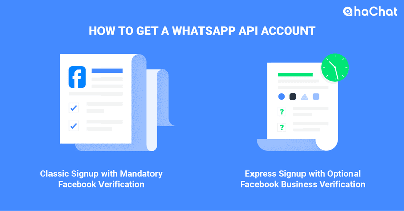
Tạo tài khoản API WhatsApp
Quy trình xác minh Doanh nghiệp trên Facebook tốn thời gian là một phần của quy trình Đăng ký cổ điển. Mặt khác, Đăng ký qua nền tảng AhaChat cho phép bạn tạo tài khoản WhatsApp API trong vòng chưa đầy mười phút mà không yêu cầu xác thực Facebook Business, cung cấp cho bạn quyền truy cập ngay lập tức để bắt đầu thử nghiệm WhatsApp API.
Các doanh nghiệp có tùy chọn xác thực tài khoản WhatsApp API ngoài Tài khoản doanh nghiệp trên Facebook của họ. Lưu ý rằng ngay cả khi tài khoản của bạn chưa được xác nhận, tất cả các chức năng của WhatsApp Business API đều có thể truy cập và sẵn sàng sử dụng.
Xác minh tài khoản API WhatsApp
Tài khoản WhatsApp API đã được xác minh mang lại cho công ty của bạn tính hợp pháp cao hơn và giúp khách hàng dễ dàng nhận ra bạn hơn nhờ tên doanh nghiệp nổi bật của hồ sơ. Bằng cách sử dụng BSP đã chọn hoặc trực tiếp thông qua Trình quản lý kinh doanh của Facebook, bạn có thể tìm kiếm cách xác minh WhatsApp API.
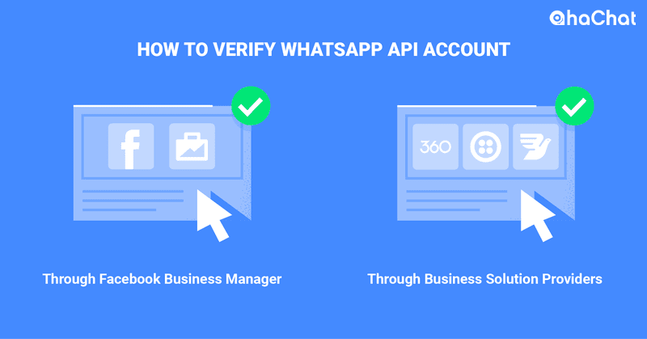
Xác minh tài khoản API WhatsApp
Bạn phải đáp ứng các tiêu chuẩn của WhatsApp để tài khoản API của bạn được xác thực. Điều này bao gồm việc tuân thủ Chính sách thương mại & kinh doanh của WhatsApp và điều hành một công ty có uy tín. Thông thường, WhatsApp sẽ chỉ xác minh các công ty dễ nhận biết như Nike và Coca-Cola.
Sau khi có tài khoản WhatsApp API, bạn có thể gửi và nhận tin nhắn bằng cách tích hợp tài khoản đó với Chatbot WhatsApp như AhaChat.com. Tiếp tục đọc để khám phá cách gửi tin nhắn bằng WhatsApp API.
Nhắn tin bằng WhatsApp Business API
Tin nhắn Session (hay còn gọi là tin nhắn theo phiên) và tin nhắn Templates (tin nhắn theo mẫu) là hai loại tin nhắn được WhatsApp API hỗ trợ và chúng ta sẽ tìm hiểu cả hai loại tin nhắn này trong phần này.
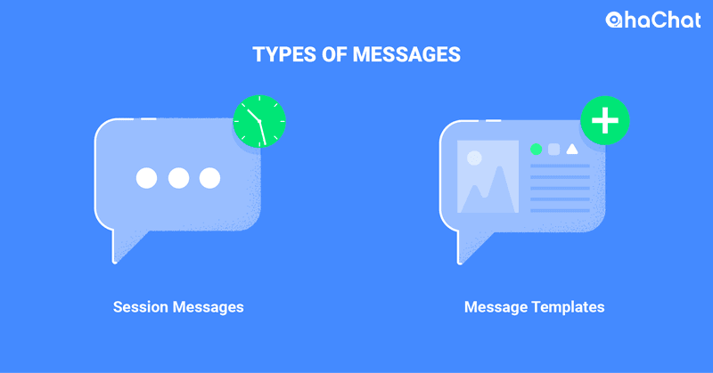
Các loại tin nhắn mà WhatsApp API có thể gửi
WhatsApp Business API: Nhắn tin trong phiên
Các doanh nghiệp sử dụng WhatsApp API không được phép gửi tin nhắn bất cứ khi nào họ muốn. WhatsApp áp dụng một hạn chế nhắn tin được gọi là Nhắn tin theo phiên để ngăn chặn thư rác và đảm bảo dịch vụ AhaChat tiếp nhận các tin nhắn đến một cách nhanh chóng.
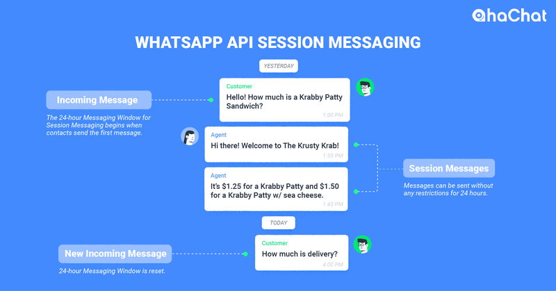
Nhắn tin phiên API cho WhatsApp
Bạn có cửa sổ 24 giờ để AhaChat nhận tin nhắn của các liên hệ khi sử dụng Nhắn tin theo phiên. Bạn không thể gửi Tin nhắn phiên sau khi khoảng thời gian 24 giờ trôi qua. Trước khi gửi Tin nhắn phiên, miễn là nó tuân thủ Chính sách kinh doanh của WhatsApp và Chính sách thương mại của WhatsApp, thì không cần phải xin phép trước.
Bây giờ chúng ta hãy thảo luận về nhiều loại Thông báo phiên tương tác khi bạn đã quen thuộc với chức năng của Thông báo phiên.
Nhắn tin theo phiên với WhatsApp API: Tin nhắn cho các phiên tương tác
Bạn có thể gửi Tin nhắn phiên tương tác bằng WhatsApp API ngoài Tin nhắn phiên văn bản tiêu chuẩn. Tin nhắn phiên tương tác cung cấp cho khách hàng một phương pháp thuận tiện hơn để tìm và chọn những gì họ muốn từ công ty của bạn nhờ bố cục thân thiện với người dùng.
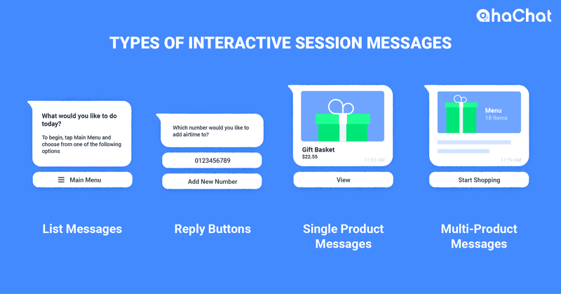
Các loại thông báo phiên tương tác: Thông báo WhatsApp API
Bốn loại thông báo phiên tương tác khác nhau là: Thông báo danh sách, nút trả lời, thông báo một sản phẩm và thông báo nhiều sản phẩm đều được bao gồm trong phần này. Gửi danh mục cho khách hàng hoạt động thực sự hiệu quả với các tin nhắn đơn và nhiều sản phẩm.
WhatsApp đã triển khai một chiến lược mới để thêm lộ trình đại lý con người trong một cuộc trò chuyện nhằm nâng cao tốt hơn trải nghiệm chung của khách hàng với các doanh nghiệp.
Lộ trình nâng cấp của con người trong Nhắn tin phiên WhatsApp API
Khách hàng coi thường việc trò chuyện với chatbot, đặc biệt nếu họ gặp vấn đề cần nhân viên giải quyết. Cuối cùng cũng thừa nhận vấn đề này, WhatsApp đã bắt buộc sử dụng cơ chế can thiệp của con người.
Bàn giao nhân viên, số điện thoại, email, biểu mẫu hỗ trợ web và lời nhắc ghé thăm cửa hàng là một số kỹ thuật bàn giao đã được phê duyệt. Xin lưu ý rằng nhu cầu này không được đáp ứng thông qua các phương pháp gián tiếp như mạng xã hội, trang web trung tâm trợ giúp hoặc liên kết đến ứng dụng.
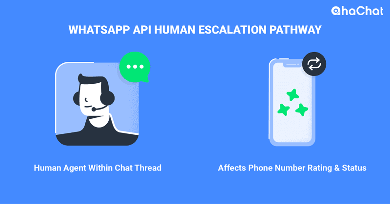
Xếp hạng chất lượng của số điện thoại của bạn có thể giảm xuống Thấp (màu đỏ) mà không có lộ trình bàn giao của con người và trạng thái của nó có thể thay đổi thành Đã gắn cờ. Thông báo sẽ được gửi đến địa chỉ email đã đăng ký của bạn và thông qua bản cập nhật từ Trình quản lý doanh nghiệp Facebook của bạn.
Trong trường hợp sự cố không được khắc phục trong 7 ngày, WhatsApp sẽ giảm hạn mức tin nhắn của bạn. Các doanh nghiệp gửi ít hơn 1.000 thông báo mỗi tuần sẽ không thấy sự khác biệt ngay lập tức. Trước tiên, bạn phải khắc phục sự cố này để tăng giới hạn nhắn tin trong tương lai.
WhatsApp API dành cho doanh nghiệp: Tin nhắn mẫu
Các doanh nghiệp chỉ được phép nhắn tin với Mẫu tin nhắn Whatsapp sau 24 giờ kể từ tin nhắn đến cuối cùng của liên hệ. Tin nhắn được phê duyệt trước được gọi là mẫu tin nhắn được sử dụng để mở lại cửa sổ nhắn tin 24 giờ hoặc bắt đầu một cuộc trò chuyện mới.
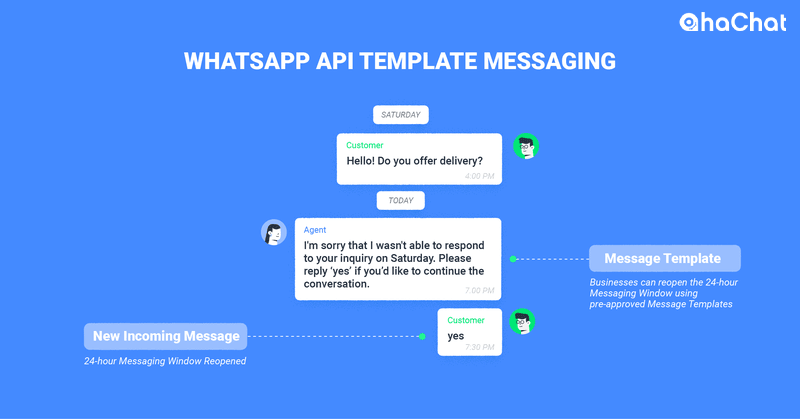
Mẫu nhắn tin cho WhatsApp API
WhatsApp API cho phép các mẫu tin nhắn tương tác và đa phương tiện ngoài các mẫu tin nhắn thông thường. Cái sau cho phép bạn kết nối các nút kêu gọi hành động hoặc trả lời nhanh, trong khi cái trước hỗ trợ ảnh, video và tài liệu PDF.
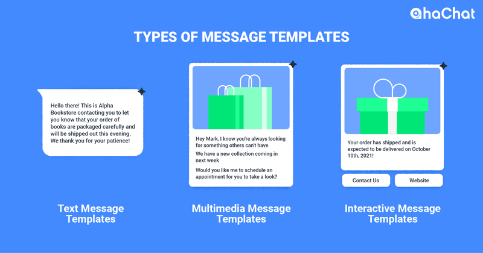
Các loại mẫu tin nhắn WhatsApp: Gửi tin nhắn qua WhatsApp API
Giao diện điều khiển của BSP hoặc AhaChat là hai cách chính để tạo mẫu tin nhắn WhatsApp. Hãy luôn nhớ rằng WhatsApp có thể từ chối các Mẫu tin nhắn đã gửi vì nhiều lý do. Kiểm tra các đề xuất này để tăng khả năng công việc của bạn sẽ được chấp nhận.
Các doanh nghiệp trước đây không thể giao tiếp nội dung phi giao dịch thông qua Mẫu tin nhắn.
Tuy nhiên, Mẫu tin nhắn phi giao dịch hiện đã có trên WhatsApp trên toàn cầu kể từ tháng 9 năm 2021.
Tuy nhiên, bạn phải cẩn thận không gửi Mẫu tin nhắn quá thường xuyên kẻo người nhận đánh dấu chúng là thư rác. Trạng thái và xếp hạng chất lượng Mẫu của bạn có thể bị ảnh hưởng bởi điều này.
Xếp hạng chất lượng và trạng thái cho các mẫu tin nhắn trong WhatsApp API Messaging
Xếp hạng chất lượng Mẫu tin nhắn, không nên nhầm lẫn với xếp hạng chất lượng số điện thoại, hiển thị mức độ phản ứng của người tiêu dùng đối với Mẫu tin nhắn trong suốt 24 giờ qua. Trong Trình quản lý kinh doanh của Facebook, bạn có thể kiểm tra trạng thái và xếp hạng chất lượng của Mẫu của mình.
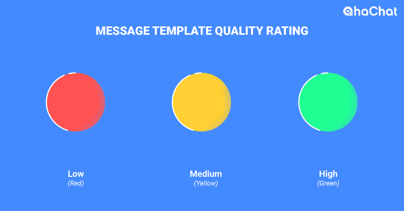
Đánh giá chất lượng Mẫu tin nhắn
Điểm đánh giá mẫu tin nhắn Có ba trạng thái chất lượng để đánh giá chất lượng mẫu:
- Cao (Xanh lục)
- Vừa (vàng)
- Thấp (màu đỏ)
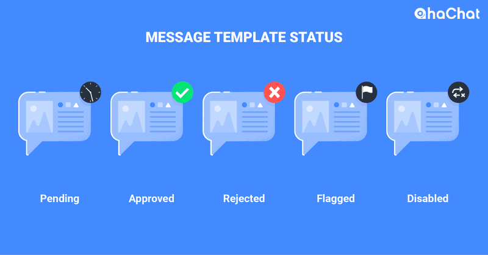
Trạng thái của mẫu tin nhắn
Trạng thái của mẫu tin nhắn có thể thay đổi nếu xếp hạng chất lượng của nó giảm. Đối với Mẫu tin nhắn, có năm trạng thái:
- Đang chờ xử lý: Khi một công ty ban đầu tải lên một mẫu chưa được phê duyệt
- Đã phê duyệt: Khi Mẫu tin nhắn đã được chấp nhận
- Bị từ chối: Sau khi từ chối mẫu tin nhắn
- Đã gắn cờ: Khi xếp hạng chất lượng ở trạng thái Thấp.
- Đã tắt: Trạng thái của Mẫu tin nhắn thay đổi thành Đã tắt khi đạt đến trạng thái Đã gắn cờ và xếp hạng chất lượng của nó không tăng trong vòng 7 ngày. Không thể gửi hoặc chỉnh sửa Mẫu tin nhắn bị vô hiệu hóa.
Bạn sẽ được thông báo qua email nếu trạng thái Mẫu của bạn thay đổi thành Đã gắn cờ hoặc Đã tắt. Đảm bảo rằng bạn chỉ gửi Mẫu tin nhắn cho những khách hàng đã chọn tham gia để tránh việc Mẫu tin nhắn của bạn bị vô hiệu hóa.
Mẫu nhắn tin API WhatsApp: Chọn tham gia
Trước khi bắt đầu thảo luận với Mẫu tin nhắn, WhatsApp cần các doanh nghiệp nhận được sự chọn tham gia của người tiêu dùng để duy trì chất lượng trải nghiệm của khách hàng.
Người ta có thể thu thập các lựa chọn tham gia cả trong và ngoài WhatsApp. Xem xét phản hồi bằng giọng nói tương tác (IVR), biểu mẫu trực tuyến, quảng cáo, liên kết và mã QR trên WhatsApp, cũng như các cuộc hội thoại trong chuỗi WhatsApp (tin nhắn do khách hàng khởi xướng).
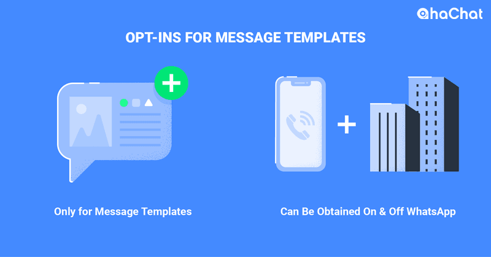
Tin nhắn được gửi qua WhatsApp API: Chọn tham gia nhắn tin mẫu
Trước tiên, người liên hệ phải hiểu lợi ích của việc chọn tham gia trước khi họ làm như vậy. Tốt nhất là yêu cầu chọn tham gia vào thời gian và địa điểm thích hợp. Lấy sự đồng ý của họ để nhận các bản cập nhật mới, chẳng hạn như khi họ tạo tài khoản trên nền tảng của bạn. Bây giờ hãy nói về việc quản lý danh bạ khi bạn hiểu chức năng của tính năng chọn tham gia.
Nhắn tin mẫu WhatsApp API: Quản lý liên hệ
Chúng ta sẽ nói về các khía cạnh khác nhau của quản lý liên hệ trên WhatsApp API trong phần này. Điều này bao gồm việc duy trì danh tính của người liên hệ bằng Thông báo danh tính người dùng cũng như xác nhận và nhập người liên hệ vào WhatsApp CRM.
Nhập và xác minh danh bạ
Bạn phải đảm bảo rằng các liên hệ của mình có số WhatsApp đang hoạt động trước khi nhập chúng.
Việc xác minh danh bạ là rất quan trọng vì việc gửi tin nhắn đến các số WhatsApp giả mạo sẽ làm tổn hại danh tiếng của bạn.
Sau đây là một số điều cần lưu ý: Người dùng WhatsApp API sẽ bị cấm nếu họ xác minh quá nhiều số điện thoại mà không liên hệ với họ. Điều này có thể sẽ ngăn những kẻ gửi thư rác ra khỏi nền tảng.
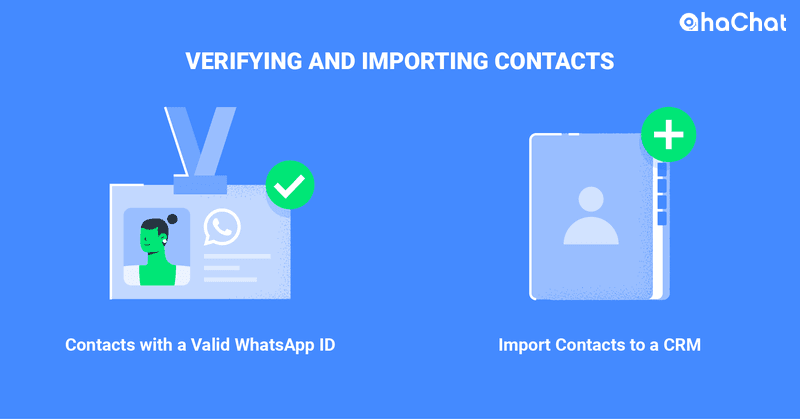
Xác minh và nhập danh bạ từ WhatsApp
WhatsApp API không lưu trữ danh bạ. Bạn có thể nhập danh bạ của mình vào WhatsApp CRM sau khi đã xác minh chúng. Nhập liên hệ không được giải thích rõ trong tài liệu WhatsApp nhưng chúng tôi đã chỉ cho bạn cách thực hiện trong bài viết này.
Số điện thoại của một số liên lạc đôi khi có thể thay đổi. Các doanh nghiệp chọn không nhận Thông báo nhận dạng người dùng sẽ không được thông báo về thay đổi quyền sở hữu số.
Cảnh báo nhận dạng khách hàng
Giao tiếp kinh doanh với Liên hệ chính xác được đảm bảo bằng thông báo nhận dạng người dùng. Các doanh nghiệp chọn nhận các thông báo này sẽ được thông báo khi có tin nhắn đến từ một số đã được đăng ký với người dùng mới.
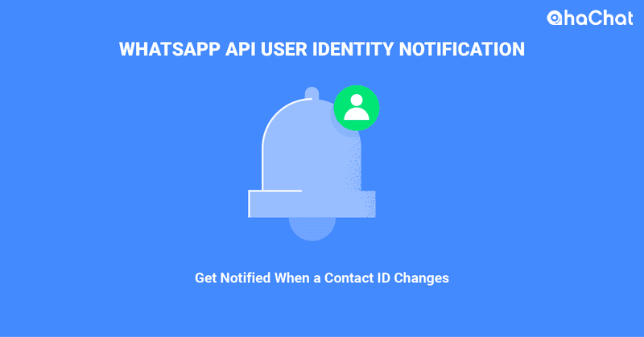
Thông báo danh tính cho người dùng
Các doanh nghiệp không thể nhắn tin cho những số này cho đến khi họ chấp nhận đăng ký lại. Điều này ngăn thông tin nhạy cảm bị rò rỉ qua WhatsApp cho cả doanh nghiệp và khách hàng. Ngoài ra, Thông báo nhận dạng người dùng bảo vệ các công ty khỏi bị báo cáo là spam trong trường hợp họ nhắn tin cho người dùng không chọn tham gia.
Bài viết đã kết thúc! Giờ đây, bạn đã có tất cả kiến thức cần thiết về WhatsApp Business API, vì vậy hãy sẵn sàng sử dụng và phát triển công ty của bạn.